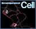

News Archives: Nov 1, 2003 - Jan 6, 2017
42 stories listed.
|
Alex Schier's Zebrafish Offer View Into Development and Behavior
- Dec. 13, 2005
They’re the first fish kids kill. But they’re ... Tags: 2005, Alexander Schier, profile |
|
|
A New Way to Study Spinal Cord Injury
- Dec. 7, 2005
A tragic truth is that the mammalian central nervous system ... Tags: 2005, Joshua Sanes, Nature Medicine, publication |
|
|
Jack Strominger's 80th Birthday Symposium
- Dec. 4, 2005
On December 9-10, MCB is pleased to present a scientific ... Tags: 2005, Jack Strominger, symposium |
|
|
MCB Students Awarded Merck-Wiley Fellowships and Peralta Prize
- Nov. 21, 2005
Three MCB graduate students were recognized for their academic achievement ... Tags: 2005, Ernest Peralta Fund Award, Merck-Wiley Fellowship, awards |
|
|
Sex and Smell: the Molecular Architecture of Pheromone Sensing
- Nov. 18, 2005
In a set of experiments published in the November 17 ... Tags: 2005, Catherine Dulac, Cell, publication |
|
|
Markus Meister Wins 2005 Golden Brain Award
- Nov. 15, 2005
Markus Meister has been awarded the Golden Brain Award by ... Tags: 2005, Golden Brain Award, Markus Meister, awards |
|
|
Kevin Eggan Named Investigator by Stowers Medical Institute
- Nov. 4, 2005
Kevin Eggan, Assistant Professor of Molecular and Cellular Biology, has ... Tags: 2005, Kevin Eggan, Stowers Medical Institute, awards |
|
 |
MCB Welcomes New Faculty
- Oct. 28, 2005
We are pleased to announce the arrivals of new MCB ... Tags: 2005, Alexander Schier, Erin O'Shea, Kevin Eggan, Naoshige Uchida, Victoria D'Souza |
|
Erin O'Shea Investigates How Cells Respond to Their Surroundings
- Oct. 24, 2005
O’Shea’s research is motivated by her desire to ... Tags: 2005, Erin O'Shea, profile |
|
|
Who Calls the Shots When the Synapse Forms?
- Oct. 6, 2005
The synapse is the heart of the nervous system, the ... Tags: 2005, Development, Joshua Sanes, Proceedings of the National Academy of Sciences, publication |
|
|
Richard Flavell To Give Edsall Lecture
- Oct. 6, 2005
Dr. Richard Flavell’s research is directed towards understanding the ... Tags: 2005, John T. Edsall Lecture, lecture |
|
|
Caspases and Nitric Oxide Regulate Dendritic Cell Maturation
- Oct. 3, 2005
A paper from the Strominger lab sheds interesting new light ... Tags: 2005, Jack Strominger, Nature Immunology, publication |
|
|
Kevin Eggan: Steps Towards Stemming Disease
- Sept. 14, 2005
Federal funding restrictions? Public controversy? These challenges might deter some ... Tags: 2005, Kevin Eggan, profile |
|
 |
How to Make a Membrane
- Sept. 13, 2005
The ingredients of a human cell include about 100,000 ... Tags: 2005, Axel Nohturfft, Proceedings of the National Academy of Sciences, publication |
|
Human Embryonic Stem Cells Can Reprogram Adult Somatic Nuclei
- Aug. 26, 2005
To test whether Human Embryonic Stem (hES) cells could reprogram ... Tags: 2005, Douglas Melton, Kevin Eggan, Science, publication |
|
|
High School Teachers Energized by Neurobiology Summer Session
- Aug. 23, 2005
18 high school biology teachers participated in the third annual ... Tags: MCB Outreach Program, 2005 |
|
|
Jack Strominger's Scientific Journey
- Aug. 10, 2005
Eighty years ago, Jack Strominger, Higgins Professor of Biochemistry, began ... Tags: 2005, Jack Strominger, profile |
|
|  |
Unraveling our Plumbing
- Aug. 2, 2005
Water and salt balance in our bodies and removal of ... Tags: 2005, Andrew McMahon , Developmental Cell, publication |
 |
The Retina Seeks Novelty
- July 7, 2005
Our eyes report the visual world to the brain, but ... Tags: 2005, Markus Meister, Nature, publication |
 |
Jim Wang: Topoisomerase to the Finish
- July 6, 2005
"It’s my ambition that someday the word ‘topoisomerase’ will ... Tags: 2005, James C. Wang, profile |
|
E. Coli Swim on the Right-Hand Side
- June 30, 2005
Researchers working together in the Howard Berg lab in MCB ... Tags: 2005, Howard Berg, Nature, publication |
|
|
Chromosome and Replisome Dynamics in E. coli
- June 17, 2005
All cells are faced with two very basic problems each ... Tags: 2005, Cell, Nancy Kleckner, publication |
|
|
Richard Losick Elected to American Philosophical Society
- June 13, 2005
In April, Richard Losick, the Maria Moors Cabot Professor of ... Tags: 2005, American Philosophical Society , Richard Losick, awards |
|
|
CCT is Required for the Biogenesis of Functional Plk1
- May 31, 2005
The polo-like kinase (plk) family has emerged as a key ... Tags: 2005, Howard Temin Award, Molecular and Cellular Biology, Raymond Erikson, awards, publication |
|
|
Pamela Björkman to Give Bloch Lecture
- May 26, 2005
Pamela Björkman returns to MCB on Thursday, June 2nd ... Tags: 2005, Bloch Lecture, lecture |
|
|
Thinking About Thought: First Annual MBB Graduate Student Conference
- May 25, 2005
Students, faculty and fans of cognitive science gathered last week ... Tags: 2005, Harvard's Mind/Brain/Behavior Initiative (MBB), symposium |
|
|
The Return of the Rhinos
- May 19, 2005
Bessie and Victoria are back, but from where? Nearly two ... Tags: 2005, rhinos |
|
|
John Dowling Gives His Last Lecture in BS 80
- May 12, 2005
May 10, 2005 marked the end of an era, both ... Tags: 2005, John Dowling |
|
|
The First Annual MBB Graduate Student Conference, May 12-13
- May 9, 2005
To foster communication among students studying thought from different perspectives ... Tags: 2005, Harvard's Mind/Brain/Behavior Initiative (MBB), symposium |
|
|
Developmental Commitment in B. Subtilis
- May 6, 2005
Studying Bacillus subtilis, a microbe that can form spores when ... Tags: 2005, Cell, Richard Losick, publication |
|
|
Nancy Kleckner: A Life In Science
- May 4, 2005
Last fall, members of the European Molecular Biology Organization (EMBO ... Tags: 2005, Nancy Kleckner, profile |
|
|
Vesicle Recycling After Endocytosis
- April 27, 2005
Communication between neurons occurs at specialized structures called synapses, where ... Tags: 2005, Proceedings of the National Academy of Sciences, Venkatesh Murthy, publication |
|
|
Symposium to Honor Jim Wang
- April 25, 2005
A symposium will be held on Saturday, April 30, 2005 ... Tags: 2005, James C. Wang, symposium |
|
|
Bringing High School Students to the Bench
- April 18, 2005
Approximately 600 high school students participated in the annual MCB-HHMI ... Tags: MCB Outreach Program, 2005 |
|
|
April 16 Symposium to Showcase Microbial World's Rich Diversity
- April 11, 2005
The field of microbiology, pulsing with new excitement, has become ... Tags: 2005, Microbial Sciences Initiative at Harvard, Microbial Sciences Symposium, symposium |
|
 |
Third-Annual Merck Awards for Genome-Related Research Announced
- March 30, 2005
Harvard students and faculty gathered with representatives from Merck on ... Tags: 2005, Andrew McMahon , John Dowling, New Scholar Awardee in Aging, awards |
 |
Structure of a Bacterial Centromere
- March 25, 2005
Dividing cells face the challenge of ensuring that newly duplicated ... Tags: 2005, Molecular Cell, Richard Losick, publication |
 |
Andy McMahon: Body-Building, an Embryonic Perspective
- March 23, 2005
More often than not, those who achieve success in their ... Tags: 2005, Andrew McMahon , profile |
|
Mammalian SAD Kinases Are Required for Neuronal Polarization
- Feb. 11, 2005
A recent study by Kishi et al. shows how research ... Tags: 2005, Joshua Sanes, Science, publication |
|
|
Lichtman at Work: Eyes Wide Open
- Jan. 20, 2005
Double-wide color monitors glow in the darkened room like fish ... Tags: 2005, Jeff Lichtman, profile |
|
|
Bioinformatic Dissection of High-Level Cellular Behavior
- Jan. 19, 2005
Although microarray technology is wildly popular among biologists, even its ... Tags: 2005, Benjamin de Bivort, Proceedings of the National Academy of Sciences, publication |
|
|
Faithful Chromosome Segregation
- Jan. 19, 2005
Errors in chromosome segregation lead to disease and death. To ... Tags: 2005, Andrew Murray, Science, publication |